Milestone 4: June 14, 2005
- Introduction to Open/SpeedShop
- Open/SpeedShop Installation Information
- Open/SpeedShop
Tools
- Open/SpeedShop Invocation Command "openss"
- Using the GUI Tool
- Using the Interactive CLI Tool
- Using the Batch Command Tool
- Scripting API
- Plugin API (Extensibility) Description
- Appendix A: Command Syntax Description
Introduction
to Open/SpeedShop
Brief Open/SpeedShop Overview
Open/SpeedShop was designed to be modular and easily extendable. It supports the concept of plugins which allow users, if they so desire, to create their own performance experiments. The project is designed in such a way as to enable value-added plugins to be added to the open source version. These value-added plugins will be advanced performance analysis experiments or advanced/enhanced versions of the command line and GUI analysis tools. The hope is that these advanced Open/SpeedShop features would allow SGI to provide differentiation that would entice buyers to purchase Altix over other platforms. These advanced features would likely be restricted to run only on SGI platforms.
Another key feature of the performance tool is its usability. The user interface is designed for scientists not computer scientists. To make the tool usable for a greater range of users, the performance tool will provide novice user Wizards, easily understood language in the user interface components, and context sensitive help.
SGI will release, primarily under the GPL and LGPL Open Source licenses, the Open/SpeedShop baseline functionality will productize an enhanced Pro version by creating advanced Altix specific plugins. Support for single system image (SSI) machines, support for clusters (i.e., multiple OS kernels), exclusive and inclusive user time, program counter (PC) sampling, MPI call tracing, input/output tracing, floating point exception tracing and CPU hardware performance counter experiments are the key components of the baseline functionality. The performance tool will be designed in such a manner that will allow users to easily extend the tool by adding their own experiments.
The performance tool will use dynamic probe class library (DPCL) as a building block component for cluster system support. The use of DPCL will provide a portable means for the performance tool to supply cluster support for platforms supported by the Dyninst dynamic instruction package. DPCL uses the Dyninst application programming interface (API) to provide its instrumentation capability.
Availability of the new performance tool based on SpeedShop technology on Linux platforms will enable Fortran (77, 90, and 95), C, and C++ programmers to use an advanced performance analysis tool within the Open Source environment.
Common Terminology
Technical terms can have multiple and/or context sensitive meanings, therefore this section attempts to explain and clarify the meanings of the terms used in this document.
- Experiment: A set of collectors and executables bound together to generate performance metric
- Component(s): A somewhat self-contained section of the Open/SpeedShop performance tool. This section of code does a set of specific related tasks for the tool. For example, the GUI component does all the tasks related to displaying Open/SpeedShop wizards, experiment creation, and results using a graphical user interface. The CLI component does similar functions but uses the interactive command line delivery method.
- Collector: The portion of the tool containing logic that is responsible for the gathering of the performance metric. A collector is a portion of the code that is included in the experiment plugin.
- Metric: The entity, which the collector/experiment is gathering. A time, occurrence counter, or other entity, which reflects in some way on the applications performance and is gathered by a performance experiment (by the collector).
- Framework: The set of API functions that allows the user interface to manage the creation and viewing of performance experiments. It is the interface between the user interface and the DPCL and Dyninst components
- Plugin: A portion of the performance tool that can be loaded and included in the tool at tool start-up time. Development of the plugin uses a tool specific interface (API) so that the plugin, and the tool it is to be included in, know how to interact with each other. Plugins are normally placed in a specific directory so that the tool knows where to find the plugins.
Extensibility
The Open/SpeedShop performance tool is designed in such a way as to enable value-added plugins for the open source version. These value-added plugins can be the pre-canned performance analysis experiments, which contain the experiment specific collector and the corresponding command line interface and GUI support software. There are separate plugins for the collector, command line interface, and GUI software components. Plugins can also be written for advanced/enhanced versions of experiment collectors, command line interface and GUI analysis tools. These plugins allow the Open/SpeedShop performance tool to be enhanced by the open source community. Open/SpeedShop supports clustering. The open source component, DPCL, is used by Open/SpeedShop to provide the clustering capability. The use of the Dyninst component allows Open/SpeedShop to insert instrumentation and also to attach to running processes. See the Plugin API (Extensibility) Description section for a detailed description.
Open/SpeedShop Installation Information
The following sections describe how to build and install Open/SpeedShop.
Building Open/SpeedShop
Required and Open/SpeedShop Verified Packages
The following items are the components that are necessary in order to successfully build and execute Open/SpeedShop. The numbers on the right hand side of each item correspond to the versions of the components/packages that have been tested. There are certainly other combinations of the components below that will work with Open/SpeedShop, but they are not verified at this point. These components will be upgraded as the project proceeds forward.
- gcc >= 3.2
- elfutils-libelf >= 0.85
- binutils >= 2.14
- qt >= 3.3.1
- sqlite >= 3.0.8
- sqlite-devel >= 3.0.8
- tmake >= 1.11
- libtool >= 1.5.2
- python >= 2.3.4
- doxygen >= 1.3.6
- libunwind >= 0.96 and UW-UMD fixes
- dpcl >= 3.3.4
- dyninst >= 4.1.1
Key Environment Variables
Open/SpeedShop Developer
Related Environment Variables
- OPENSS_INSTALL_DIR - This environment variable specifies where the Open/SpeedShop binaries and libraries will be installed. Set this variable to a path, (e.g. "setenv OPENSS_INSTALL_DIR /scratch/jeg/openss/install)
- OPENSS_PLUGIN_PATH - This environment variable specifies where the Open/SpeedShop main program looks for the experiment plugins. At Open/SpeedShop initialization, set this variable to a path, (e.g. "setenv OPENSS_PLUGIN_PATH /scratch/jeg/openss/install/lib/openspeedshop)
- LD_LIBRARY_PATH - This environment variable points to the
plugin directory. This is needed for running the testing
scenarios found in the "tests" directory. The plugins can be
found in <install directory>/lib/openspeedshop.
Open/SpeedShop User Related Environment Variables
- TBD
Building Open/SpeedShop from Source
cd <openspeedshop source directory>
# Optional remove files from the last build
bootstrap --clean
# Create initial build files
bootstrap
# Configure Open/SpeedShop with or without optional installation directory designation
configure [--prefix=<Open/SpeedShop Install Directory Path>]
# optional uninstall step
make uninstall
# Make and install Open/SpeedShop
make install
Installing Open/SpeedShop from Executable RPM package(s)
TBD
Installing DPCL
DPCL is the component responsible for supporting performance measurement gathering on clusters. In a clustering configuration DPCL uses a client/server architecture. A DPCL "super daemon" is created each time the user starts a performance tool. This super daemon is responsible for insuring that a "communication daemon" is running on each of the machines in the cluster. The super daemon distributes commands from the performance tool to the various communication daemons and gathers data from them. TCP/IP is the transport mechanism for this data in DPCL.
The DPCL installation trouble shooting guide provides problem solving information and tips for the installation of the cluster support component, DPCL. A quick and dirty list of items to check off if DPCL is not working is as follows:
Step 1: Build Dyninst and DPCL - Here is the script to build the DPCL and Dyninst
##!/bin/tcsh
################################################################################
# DPCL/Dyninst (in directory $HYBRID)
################################################################################
setenv DYNINST_ROOT "$HYBRID/dyninst"
if ((`uname` == "Linux") && (`uname -m` == "ia64")) then
setenv PLATFORM "ia64-unknown-linux2.4"
else if (`uname` == "Linux") then
setenv PLATFORM "i386-unknown-linux2.4"
endif
cd $DYNINST_ROOT
mkdir -p ${PLATFORM}/bin
mkdir -p ${PLATFORM}/lib
cd $DYNINST_ROOT/core
make DyninstAPI
cd $DYNINST_ROOT
install -d $ROOT/include/dyninst
install -D -m u=rw,g=r,o=r core/dyninstAPI/h/BPatch*.h $ROOT/include/dyninst
install -D ${PLATFORM}/lib/libdyninstAPI_RT.so.1 $ROOT/lib/libdyninstAPI_RT.so.1
install -D ${PLATFORM}/lib/libdyninstAPI.so $ROOT/lib/libdyninstAPI.so
cd $DYNINST_ROOT/../dpcl/src
./configure --prefix=$ROOT --includedir=$ROOT/include/dpcl --enable-md-dyninst
make
make install
unsetenv DYNINST_ROOT
unsetenv PLATFORM
cd ../../..
Step 2: Check .rhosts file
Make sure that your login specific .rhosts file has entries for all the hosts you will be accessing via DPCL. Entries will look like this: (not the dashed lines)
----------------------------------------
hubble userid
hubble.americas.sgi.com userid
----------------------------------------
Step 3: dpcl.config file must be present
Create a file named dpcl.config in /opt/dpcl/etc that contains the following two lines: (not the dashed lines)
------------------------------
security:
method = dpcl
------------------------------
Step 4: Super Daemon entry in /etc/services
The build mentioned above should install the Super Daemon entry in /etc/services. If it doesn't proceed with the following.
Add the DPCL Super Daemon to the /etc/services file. The line(s) should be as follows: (not the dashed lines) You can insert it at the end of the file just above the Local Services area.
-------------------------------------------
# dpcl Super Daemon
dpclSD 7895/tcp # DPCL Super Daemon
-------------------------------------------
Step 5: /etc/xinetd.d/dpclSD file
Add the DPCL Super Daemon xinetd.d "dpclSD" file into the /etc/xinetd.d directory. Here is an example of the file contents needed: (not the dashed lines)
---------------------------------------------
service dpclSD
{
disable = no
socket_type = stream
protocol = tcp
wait = no
user = root
server = /perftools/ROOT/bin/dpclSD
server_args = /perftools/ROOT/bin/dpcld /tmp/dpcld /tmp/dpcl
env += LD_LIBRARY_PATH=/perftools/ROOT/lib
env += DPCL_RT_LIB=/perftools/ROOT/lib/libdpclRT.so.1
env += DYNINSTAPI_RT_LIB=/perftools/ROOT/lib/libdyninstAPI_RT.so.1
}
---------------------------------------------
Change the directory patch to match that of the actual directory path of the actual DPCL build you want to run. In this example the DPCL components are in /perftools/ROOT.
Step 6: Activate the Super Daemon
Do a: "ps -ef | grep dpcl" to see if any existing super daemons are running or if there are any hanging daemons.
The 'xinetd' daemon must be restarted: "/etc/init.d/xinetd start"at some point following Open/SpeedShop installation. Doing so allows 'xinetd' to pick up the SuperDaemon (dpclSD) service and start 'listening' on
its port.
For Altix: 'kill -SIGHUP `cat /var/run/xinetd.pid`'. When 'xinetd' is restarted, lines similar to the following should appear in the system file '/var/log/messages':
.... xinetd[617]: Starting reconfigurationDo the following command once the xinetd daemon has been restarted, per the TroubleShooting Guide. This will tell you if the Super Daemon is running.
.... xinetd[617]: readjusting service dpclSD
"netstat -a -inet | grep dpclSD"
or
"netstat -a -inet" yields this type of list:
Active Internet connections (servers and established)
Proto Recv-Q Send-Q Local Address Foreign Address State
tcp 0 0 *:32768 *:* LISTEN
tcp 0 0 *:login *:* LISTEN
tcp 0 0 localhost.localdo:32769 *:* LISTEN
...
...
tcp 0 0 *:telnet *:* LISTEN
tcp 0 0 *:dpclSD *:* LISTEN
tcp 0 0 *:smtp *:* LISTEN
Open/SpeedShop Tools
The tools that are the basis for Open/SpeedShop are the performance tool graphical user interface (GUI), the interactive command line (CLI), and the batch command. These are the three Open/SpeedShop tools that have user interfaces.
Open/SpeedShop Invocation Command "openss"
The Open/SpeedShop program will be invoked by the user typing the "openss" command. When the user invokes Open/SpeedShop command there are three options for it's mode of operation:
This invocation of Open/SpeedShop causes the GUI to be raised then a command panel is also created. This command panel window becomes the interactive CLI window. Under this invocation Open/SpeedShop interactive commands can be entered into the GUI's command panel and have the same effect as if they were entered under the "openss -cli" option.This invocation of Open/SpeedShop causes the window terminal becomes the interactive CLI window.This invocation of Open/SpeedShop causes Open/SpeedShop to execute a performance experiment. specified by additional arguments, directly without user interaction. The -batch operation can be used in scripts and batch processing environments.
Using the GUI Tool
The Open/SpeedShop GUI contains a main window from which users can choose a wizard to help choose the proper experiment based on input to the wizard selecting questions. The GUI also contains a source view panel, a statistics panel, and command panel.
GUI Launch Background Information:
The GUI is bundled into a dynamic library that is loaded on demand. It's the Command Line Interface (CLI) that launches the GUI. By default the CLI will launch the GUI upon invocation of the Open/SpeedShop tool. However, the CLI can be started without starting the GUI ($ openss -cli) and then the GUI can loaded and initialized when needed via the CLI "OpenGui" command.
Upon invoking Open/SpeedShop ($ openss) the command line is parsed, and if the GUI is requested, the GUI library is loaded and launched. Open/SpeedShop then drops into an event loops, one for parsing command line events and the other for parsing GUI events.
When the GUI is loaded, the GUI looks for GUI plugins in the default directory and in the OPENSS_TOOL_PLUGIN_DIR environment variable path. Each file in the directory is opened and an internal entry point is queried. If found, the plugin manager calls the entry point, initializes any exported menus, brings up the GUI, and then drops into the main event loop waiting for user interaction.
Basic Menus and Menu Item Introduction
This section briefly discusses the Open/SpeedShop GUI menus and their corresponding menu items. We will touch on the File menu, Tools menu, Experiments menu, and the Wizards menu, as shown at the top of the Open/SpeedShop window below.
File Menu
The File menu contains the menu items shown below:
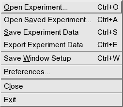
Open Experiment
TBD
Open Saved Experiment
TBD
Save Experiment Data
TBD
Export Experiment Data
TBD
Save Window Setup
TBD
Preferences Menu Item
Selecting the Preferences menu item will cause the Open/SpeedShop Preferences Dialog window to appear. Selections for various configuration items can be done by selecting either General or a specific panel and then changing the particular preference item and clicking either the Apply button or the Ok button. The Apply button will apply the c
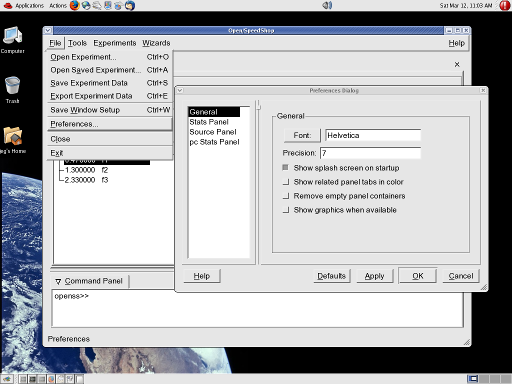
Close Menu Item
The Close menu item will cause this particular window to close.
Exit Menu Item
The Exit menu item will cause the Open/SpeedShop tool to completely stop execution and close all windows.
Tools Menu
The Tools Menu contains items for the panels that have been created. In this example three panels can be accessed by clicking on the corresponding menu items.
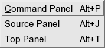
Command Panel
The command panel is the panel that supports input of the same set of interactive command line interface (CLI) commands. These are the commands that that may be entered when the Open/SpeedShop tool is invoked via "openss -gui". See the CLI command section for more information.
Source Panel
TBD
Top Panel
TBD
Experiments Menu
The Experiments Menu contains items corresponding to the experiments that are installed in the tool. In this example six experiments are available. The experiment panel can be accessed by clicking on the corresponding menu items.
In reality at this, the Milestone 3 delivery, only the PC Sampling experiment is developed. Clicking on PC Sampling will bring up the program counter (PC) Sampling experiment panel as shown in the PC Sampling Experiment section (TBD at this time).
FPE Tracing Experiment
TBD
HW Counter Experiment
TBD
I/O Experiment
TBD
MPI Experiment
TBD
PC Sampling Experiment
TBD
User Time Experiment
TBD
Wizard Menu
FPE Tracing Experiment Wizard
TBD
HW Counter Experiment Wizard
TBD
I/O Experiment Wizard
TBD
MPI Experiment Wizard
TBD
PC Sampling Experiment Wizard
See the Wizard description for Typical Open/SpeedShop GUI Wizard Usage
User Time Experiment Wizard
TBD
Typical Open/SpeedShop GUI Wizard Usage


Having launched the GUI via either the openss -gui or by default with the openss default command (no -cli, -batch, or -gui options), the initial window will look like this:
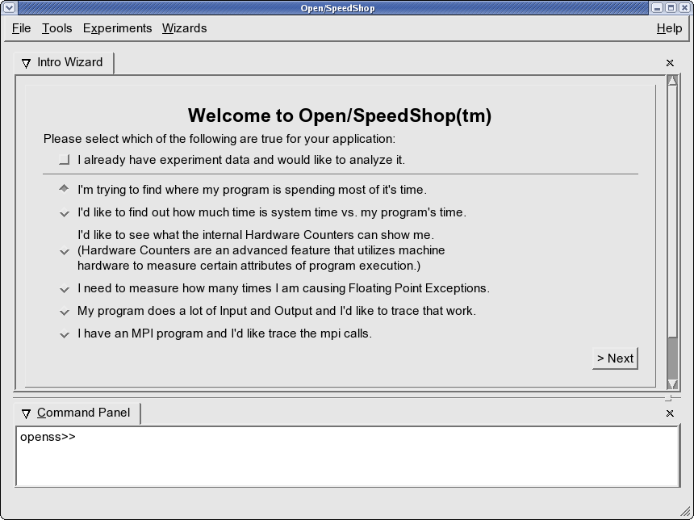
Given this window the user can answer the wizard questions and proceed by clicking on the Next button on the lower right hand side of the Open/SpeedShop GUI window. In this example the user has chosen the default option which is to find out where the time is spent in the user's yet to be defined application. When the user clicks on the Next button this is the window that appears.
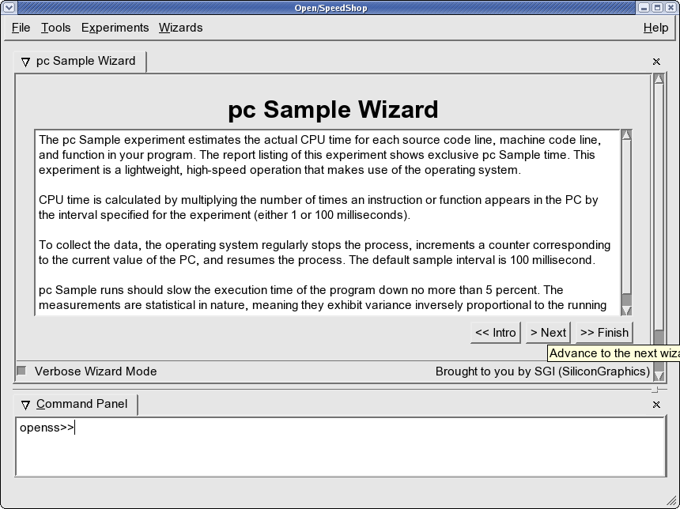
The above panel/window is the introduction panel to the PC (Program Counter) Sampling Experiment Wizard. This panel explains what the Open/SpeedShop experiment, named PC sampling does. The program counter sampling experiment takes periodic samples of the machines program counter and stores them. Later in analysis the Open/SpeedShop tool associates the program counter addresses with the user's application and reports which functions, and/or source lines were executed during the applications execution. The user can now click on Next to proceed with the wizard process, go back, or quit the wizard by clicking on the Finish button. Here is the next window in the wizard process assuming the user clicked on the Next button.
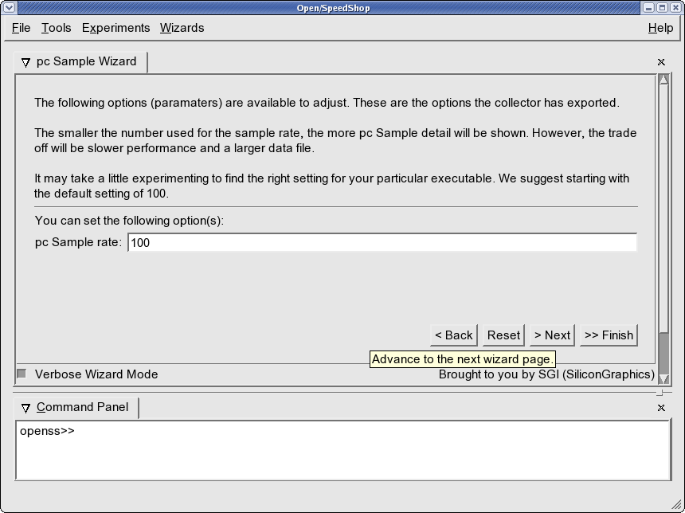
The above panel/window is the parameter selection panel for the PC (Program Counter) Experiment Wizard. This panel allows the user to set the sampling rate at which the PC sampling experiment will sample the program counter and save that address as the experiment measurement data. The Program Counter experiment takes the periodic samples of the machines program counter and stores them. Later in analysis the Open/SpeedShop tool associates the program counter addresses with the user's application and reports which functions, and/or source lines were executed during the applications execution. The user can now click on Next to proceed with the wizard process, go back, or quit the wizard by clicking on the Finish button. The user may also click on the Reset button, which will reset the parameter to the default value. Here is the next window in the wizard process assuming the user clicked on the Next button.
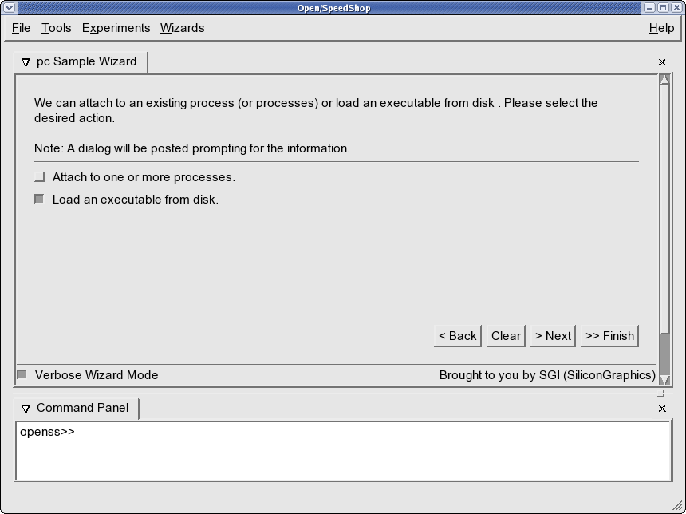
The panel/window above allows the user to select the executables or attach to a set of running processes. By selecting the "Load an Executable from Disk" item the user will cause a selection window to appear. Using the selection window the user can click on executables to be the application that the PC sampling experiment will gather data for.
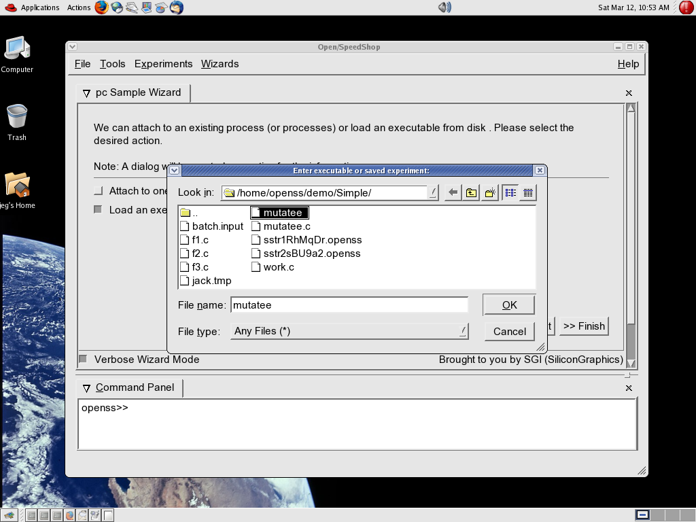
The panel above shows the executable selection window which allows the user to select the executable they would like to load and subsequently have performance analysis done on.
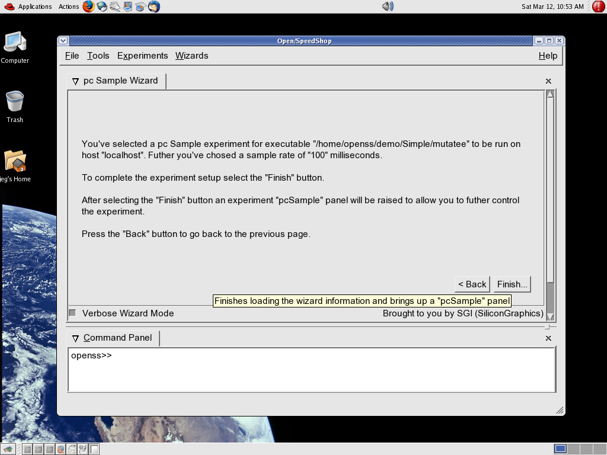
The panel/window above summarizes the results of the user's choices and tells the user to complete the process of creating the PC sampling experiment the user should click on the Finish button. Once the user clicks on the Finish button the PC sampling experiment window will appear.
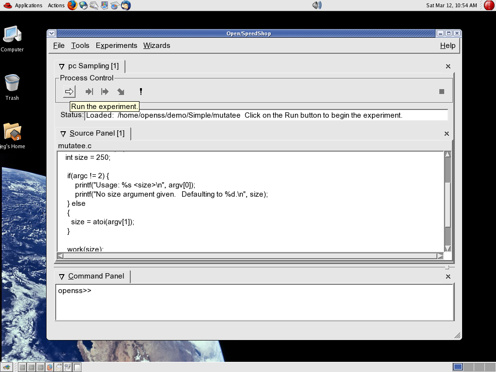
The panel/window above is the PC Sampling experiment window. The experiment is ready to run. Note that in the Status output output area the executable mutatee is loaded.
The process control area provides icons that may be clicked on to control the execution of the experiment. The icon to action translation is as follows:
- => Run the experiment
- =>| Pause the experiment
- |=> Run to Next statement
- \> Step into the next statement
- ! Stop the experiment
The source panel contains the source associated with the loaded application/executable. To run the experiment, click on the right arrow icon, which corresponds to the Run button. Doing this will engage Open/SpeedShop to start the application and to gather the PC Sampling performance data at the sampling rate chosen in the previous step(s).
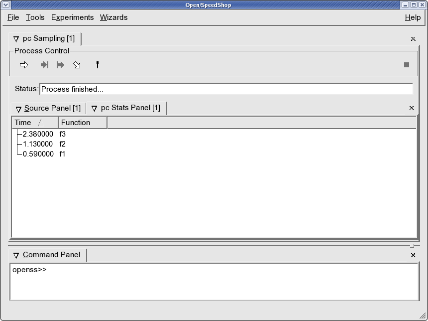
The result of split horizontal panel action is shown in the next figure.
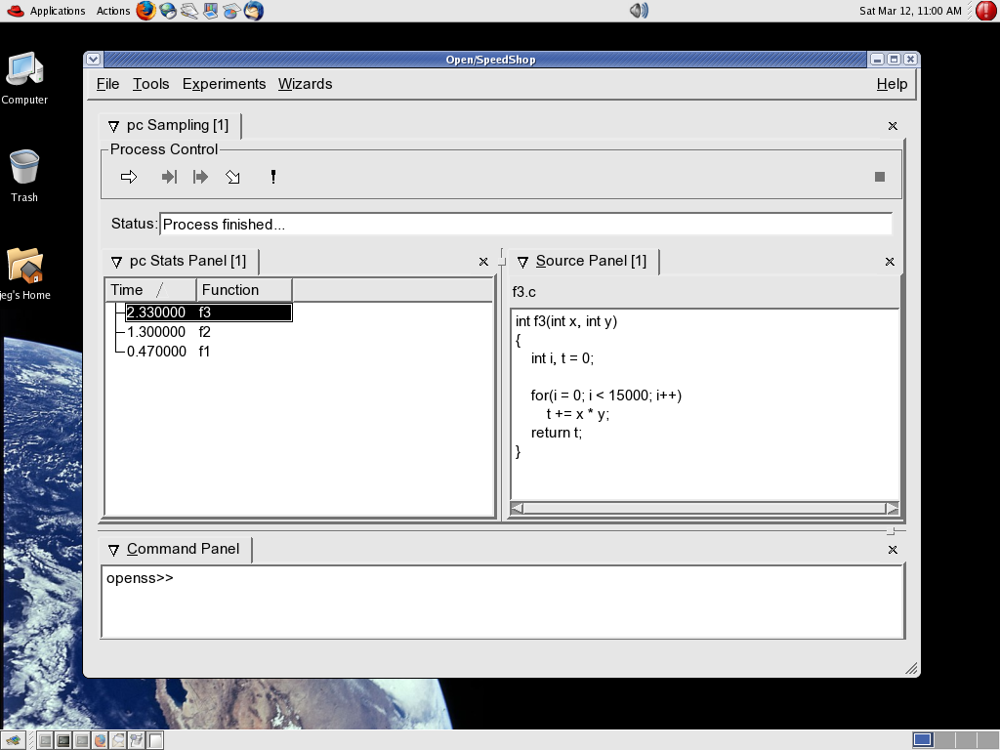
After splitting the panels appear side by side. Clicking on the "f3" function results line will focus the source panel to the corresponding function "f3" source file and line number, if the application was compiled to include source debugging information such as dwarf. Some compilers do not include source debugging information when invoked at high optimization levels. In that case you may only have the function name but no source line information, so the click mentioned above will not be able to focus to the source for the function selected.
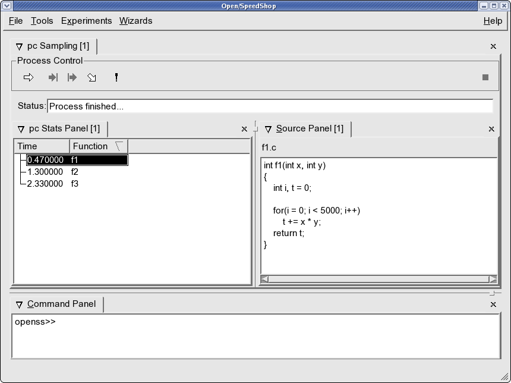
Clicking on the arrows to the right of the Time or Function header under the PC Stats Panel tab will sort the time or function list in ascending or descending order.
Typical Open/SpeedShop GUI non-Wizard Usage
To invoke the PC Sampling Experiment select the Experiments Menu and choose the PC Sampling Experiment menu item. This will cause the PC Sampling Experiment Window to be created and displayed, as in the image below.
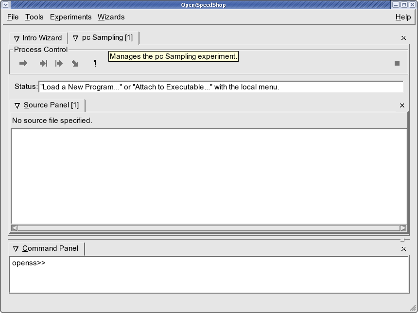
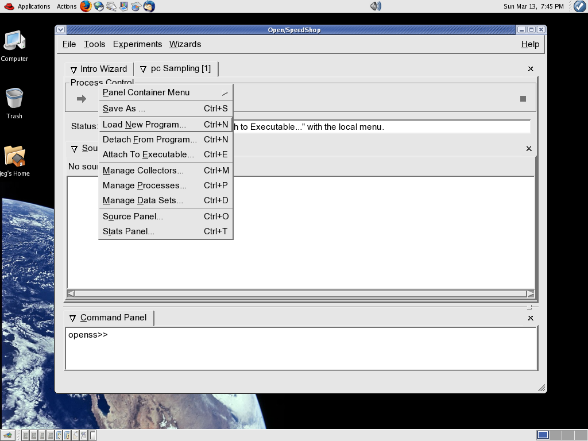
At this point the typical non-Wizard usage matches that of the Wizard usage. Follow this link for the remainder of the typical usage explanation: Ready to run experiment.
Using the Interactive CLI Tool
The interactive command line interface tool accepts a number of Open/SpeedShop commands. These commands allow the user to create performance measurement experiments, attach executables, run the experiment to gather performance metric data, and also to display the data to the screen via the text view commands or to launch the GUI to view the performance experiment data.
The interactive command syntax document contains the commands that the Interactive CLI tool accepts as input. A simple scenario to illustrate usage, both in command only form and command and explanation form. Click on this link to view the scenario.
CLI Launch Background Information:
The CLI is bundled into a dynamic library that is loaded on demand. It's the Open/SpeedShop main program that launches the CLI. By default the openss command will launch the GUI upon invocation of the Open/SpeedShop tool. However, the CLI can be started without starting the GUI ($ openss -cli).
Upon invoking Open/SpeedShop ($ openss -cli) the command line is parsed, and if the CLI is requested, the CLI library is loaded and launched. Open/SpeedShop then drops into an event loop for parsing command line events.
When the CLI or GUI is loaded, they look for CLI and/or GUI plugins in the default directory and in the OPENSS_TOOL_PLUGIN_DIR environment variable path. Each file in the directory is opened and an internal entry point is queried. If found, the plugin manager calls the entry point, initializes any exported menus, brings up the CLI and/or GUI, and then drops into the main event loop(s) waiting for user interaction.
Typical Open/SpeedShop CLI Usage
Having launched the CLI via the openss -cli the initial window will look like this:
machine.prompt>./openss -cli
At this point, user's may enter one of the commands described in Appendix A: Command Syntax. These commands are primarily related to creating, running, and monitoring performance experiments. There are also information commands which give machine information. An typical usage example of a, Milestone 3 development phase, PC Sampling Experiment follows:
openss>>
[prompt] : openss -cli
# The first user command is to create an experiment. In this example
# it is a PC Sampling experiment (pcsamp) and it will be run on the
# mutatee executable.
openss>>expcreate -f /home/openss/demo/Simple/mutatee pcsamp
# Below a "1" is returned to indicate the experiment number
openss>> 1
# The next user command is "expGo" which runs the experiment
openss>>expGo
openss>>
# The next three lines are output from the executable's execution
Usage: /home/openss/demo/Simple/mutatee <size>
No size argument given. Defaulting to 250.
/home/openss/demo/Simple/mutatee: succesfully competed.
# The next user command tells Open/SpeedShop to print the results of the experiment
openss>>expView vtop5
# The next four lines are the output of the experiment due to the expView command
CPU Time (Seconds) Function
2.090000 f3
1.320000 f2
0.650000 f1
# Open/SpeedShop prompt for additional command input
openss>>
Using the Batch Command Tool
[machine prompt]:
cat batch.input
expcreate -f
/home/openss/demo/Simple/mutatee pcsamp
expGo
expView vtop5
exit
[machine prompt]: openss -batch <
batch.input
# Experiment id "1" returned from the experiment create command
1
# The next three lines are mutatee executable output
Usage: /home/openss/demo/Simple/mutatee <size>
No size argument given. Defaulting to 250.
/home/openss/demo/Simple/mutatee: succesfully competed.
# The next four lines are output due to the expView vtop5 command
CPU Time (Seconds)
Function
2.250000 f3
1.150000 f2
0.610000 f1
Plugin API (Extensibility) Description
There are multiple plugin types used in Open/SpeedShop. A collector plugin defines the performance experiment measurement data gathering and analysis mechanism.Collector Plugin Definition
Collector Plugin FAQ:
What is blob.x for? What is
the significance of the .x suffix?
"blob.x" contains XDR descriptions of the blobs (Binary Large OBjectS) used by the collector. The term "blob" is a standard one in relational databases:
http://www.hyperdictionary.com/dictionary/binary+large+object
And ".x" is the standard suffix used for XDR files. You can do (this is what I
did) a search for "XDR file suffix" and you'll see that everyone uses ".x".
Collector parameters can be of any arbitrary type or structure. And the raw data gathered by the collector can be of any arbitrary type or structure. But the relational database doesn't know anything about these types... So whenever
parameters or raw performance data is stored in the database, it must first be converted into a "chunk of bytes" (a blob). XDR is added to the mix in order to easily handle things like endianess and structure alignment issues.
What is specifically needed to be known by the framework? Do theseclass structures need to follow a particular convention?
The naming of these files (e.g. "blob.x" vs. "my_funny_file_name.x") makes no difference to the framework. I believe Don was worried mainly about sticking to any pre-existing naming convention (and I appreciate that). The only things
that really matter to the framework are:
1) That a libtool-constructed module is placed into one of the plugin search locations (see previous emails regarding how we decide where to look for plugins). The name of the module itself is irrelevant (although conventions are in place).
2) That the module defines an externally-visible function:
CollectorImpl* CollectorFactor();
which creates an CollectorImpl instance for the collector.
Each collector defines a single class (e.g. PCSampCollector or UserTimeCollector) that inherits from CollectorImpl (which is in the framework source). CollectorImpl declares a bunch of pure virtual functions which all
inheriting classes must implement. So you can think of CollectorImpl.hxx as the "API" between the framework and the collectors.